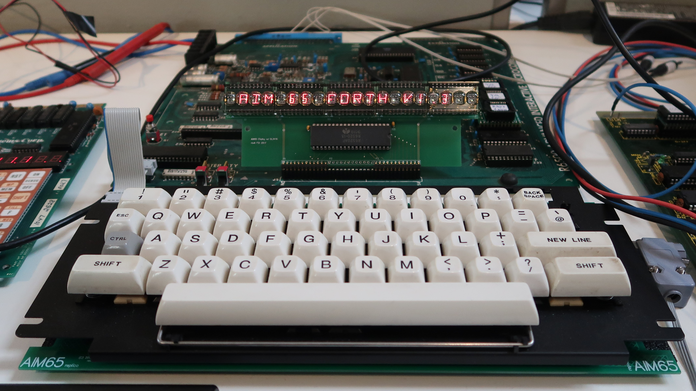
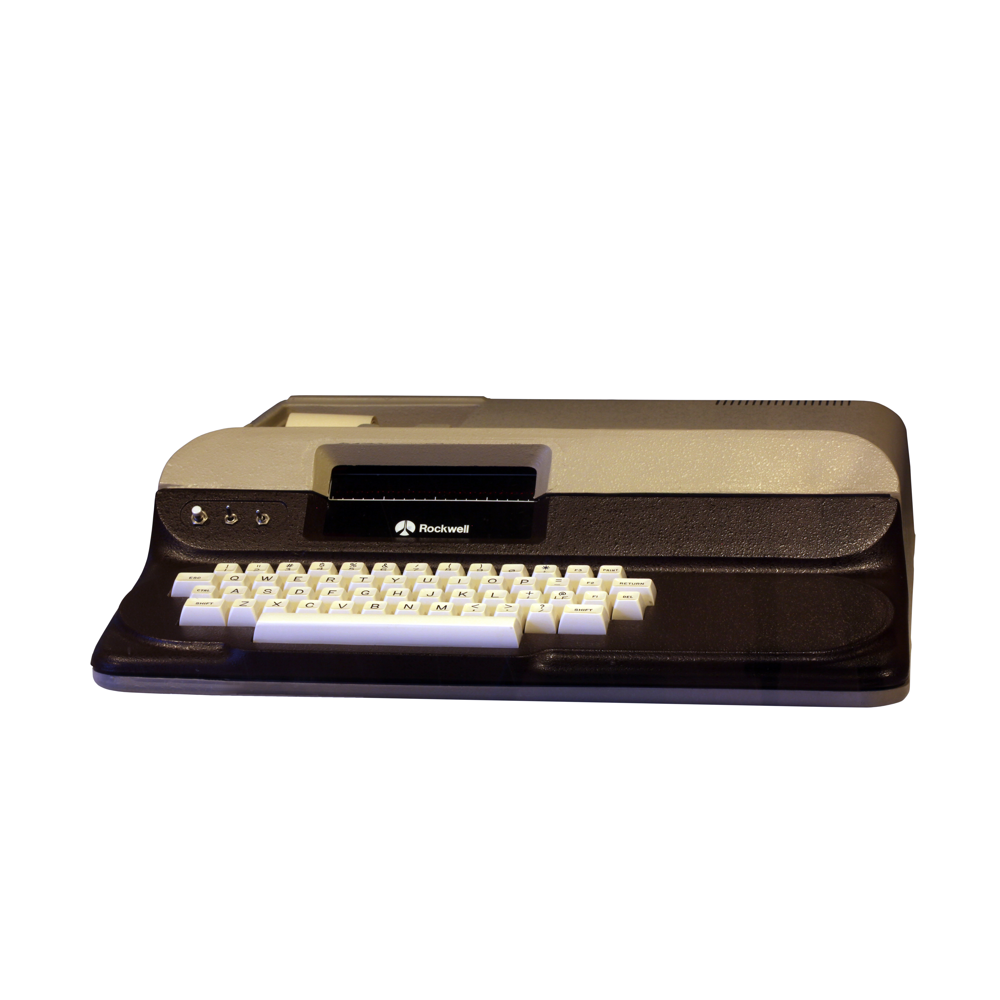

Rockwell AIM-65
The single-board computer that talks back on paper

Overview
The Rockwell AIM-65, introduced in 1978, was a single-board microcomputer that integrated a full QWERTY keyboard, a 20-character alphanumeric LED display, and — most distinctively — a built-in 20-column thermal printer, all on a single circuit board. Based on the MOS Technology 6502 microprocessor, it was sold as a development system, laboratory controller, and educational platform. Its defining HCI feature was the thermal printer: in an era of glass CRTs, the AIM-65 used paper as its primary output medium. Every interaction — typing a command, running a program, reading sensor data — produced a physical, scrolled record. The machine didn't show you results; it wrote them to you.
Deep dive
The AIM-65's thermal printer is not an optional peripheral — it is the primary output mechanism. The 20-character LED display serves only as a small status readout; the printer provides the full interaction record. When you type a BASIC command or assembly instruction, the printer scrolls it onto thermal paper. When the computer responds, it prints the answer. This creates a tangible, accumulating artifact of the human-machine conversation — a paradigm that predates the 'glass teletype' and CRT terminals that would soon dominate. The thermal paper roll captures everything: commands, output, errors, and sensor readings, in chronological order.
The AIM-65 was widely adopted in laboratory and industrial settings where its integrated I/O and self-contained design made it ideal for data logging and equipment control. With built-in analog-to-digital conversion capability, parallel I/O ports, and expansion connectors, scientists could connect temperature probes, pressure sensors, and other instruments directly to the board. The thermal printer provided immediate hardcopy of measurement data — a self-contained 'measure, compute, print' pipeline in a single board. It was used in university engineering labs, process control, and as a teaching platform for microprocessor programming.
The AIM-65 shipped with a ROM-resident monitor program (providing debug and memory manipulation commands), an assembler for 6502 machine code, and an optional BASIC interpreter on ROM. The monitor allowed direct inspection and modification of memory, register dumps, and single-step program execution — all communicated through the keyboard and thermal printer. A built-in cassette interface allowed program storage on standard audio tapes. The ROM software suite made the AIM-65 a self-contained development system with no external dependencies.
The entire system fit on a single large printed circuit board, roughly 14 × 17 inches, with all components exposed. There was no case, no enclosure — the board IS the computer. This exposed design was intentional: engineers and students were expected to probe, modify, and interface with the hardware directly. The thermal printer mechanism sits in the upper-left corner, fed by a roll of thermal paper. The full-stroke QWERTY keyboard occupies the lower portion. Cassette connectors, expansion ports, and power regulation circuitry fill the remaining real estate. It is a computer laid bare — every component visible, every signal accessible.
Team & pioneers
- Rockwell International. Semiconductor Products Division; designed and manufactured the AIM-65
- MOS Technology. Provided the 6502 microprocessor at the heart of the system
Media
